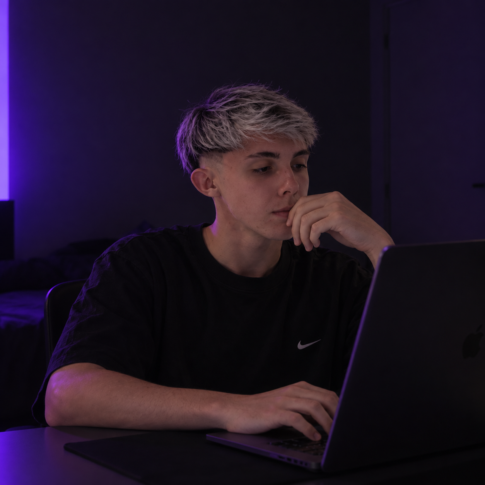
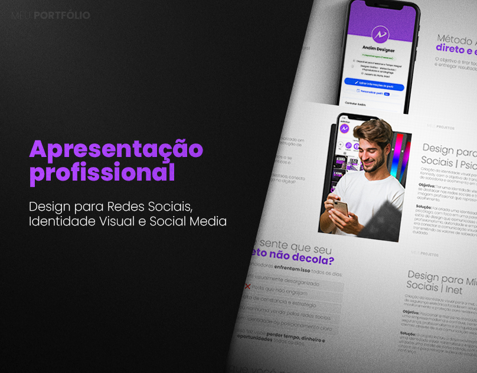
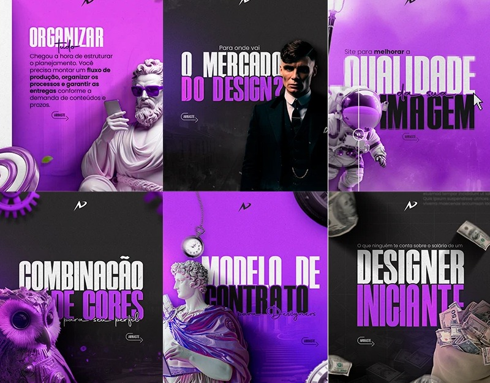

Identidade visual
Criação de marcas, direção visual e sistemas que deixam sua presença mais forte.
Designer digital & front-end
Crio identidades visuais, interfaces e campanhas que conectam estratégia, narrativa e funcionalidade em um único conceito.

Quem sou
Trabalho na intersecção entre visual, comunicação e tecnologia para criar experiências digitais que realmente funcionam para pessoas e marcas.
Meu processo foca em entender a mensagem, simplificar a entrega e transformar detalhes em diferenciais que deixam o projeto mais memorável.
Criação de marcas, direção visual e sistemas que deixam sua presença mais forte.
Páginas que unem estratégia, storytelling e conversão com visual impactante.
Materiais para redes sociais, apresentações e peças editoriais com atenção aos detalhes.
Trabalhos com foco visual, clareza e experiência digital.



Projeto autoral com foco em narrativa, hierarquia visual e mobilidade para web.